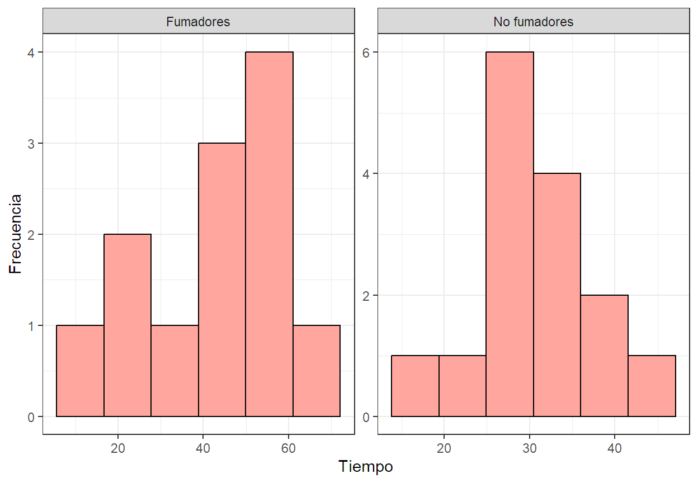

Code
library(ggplot2) #Para gráficos
library(car) #Para gráfico Q-Q
library(tidyverse) #Para manipular datos.
library(qqplotr) #Para gráfico Q-QCuando se trata de comparar dos grupos en un estudio, una de las preguntas más comunes es si hay una diferencia significativa entre sus medias. Las pruebas de estadísticas para el contraste de hipótesis sobre las medias es un análisis crucial en múltiples disciplinas, desde la biología hasta la psicología, ya que permiten determinar si las diferencias observadas entre los grupos son lo suficientemente grandes como para ser consideradas significativas, o si podrían haberse producido por azar. Dependiendo de las características de los datos, como la distribución y la varianza, se pueden emplear diferentes test, ya sean paramétricos o no paramétricos, para llevar a cabo esta comparación.
Prueba t para 2 muestras independientes:
Propósito: Compara las medias de dos grupos.
Supuestos: Distribución normal de los datos de ambas muestras y que las varianzas sean homogéneas entre ambos grupos (homocedasticidad).
Función en R: t.test() con argumentos paired=FALSE , var.equal=TRUE y alternative para indicar el tipo de contraste, alternative="two.sided" para dos colas, alternative="greater" para unilateral a la derecha, y alternative="less"para unilateral a izquierda.
Prueba t welch para 2 muestras independientes:
Propósito: Compara las medias de dos grupos.
Supuestos: Distribución normal de los datos de ambas muestras y que las varianzas sean diferentes entre ambos grupos (heterocedasticidad).
Función en R: t.test() con argumentos paired=FALSE , var.equal=FALSE y alternative para indicar el tipo de contraste, alternative="two.sided" para dos colas, alternative="greater" para unilateral a la derecha, y alternative="less"para unilateral a izquierda.
Prueba t de Student para muestras pareadas:
Propósito: Compara las medias de dos grupos de mediciones relacionadas (ejemplo., mediciones antes y después del tratamiento en los mismos sujetos).
Supuestos: Normalidad de las diferencias entre las mediciones.
Función en R: t.test() con argumentos paired=TRUE y alternative para indicar el tipo de contraste, alternative="two.sided" para dos colas, alternative="greater" para unilateral a la derecha, y alternative="less"para unilateral a izquierda.
Prueba de Mann-Whitney Wilcoxon:
Propósito: Compara las medianas de dos grupos.
Uso: Alternativa a la prueba t para muestras independientes cuando los datos no son normales.
Supuestos: No requiere normalidad, pero los datos deben ser ordinales o continuos.
Función en R: wilcox.test() con argumentos paired=FALSE y alternative para indicar el tipo de contraste, alternative="two.sided" para dos colas, alternative="greater" para unilateral a la derecha, y alternative="less"para unilateral a izquierda.
Prueba de Wilcoxon:
Propósito: Compara las medianas de dos grupos de mediciones relacionadas.
Uso: Alternativa a la prueba t para muestras pareadas cuando los datos no son normales.
Supuestos: No requiere normalidad, pero los datos deben ser ordinales o continuos.
Función en R: wilcox.test() con argumentos paired=TRUE y alternative para indicar el tipo de contraste, alternative="two.sided" para dos colas, alternative="greater" para unilateral a la derecha, y alternative="less"para unilateral a izquierda.
En un estudio sobre el habito de fumar y sus efectos sobre los patrones de sueño una de las variables importantes es el tiempo que transcure antes de quedarse dormido. En este contexto consideraremos que se extrae una muestra de tamaño 12 de una población de fumadores y otra muestra de tamaño 15 de una población de no fumadores. A ambos grupos se les monitorea el sueño y se les registra el tiempo en minutos transcurrido antes de conciliar el sueño, los datos fueron los siguientes:
| Fumadores (S) | No Fumadores (N) |
|---|---|
| 69.3 | 28.6 |
| 56.0 | 25.1 |
| 22.1 | 26.4 |
| 47.6 | 34.9 |
| 53.2 | 29.8 |
| 48.1 | 28.4 |
| 23.3 | 38.5 |
| 13.8 | 30.2 |
| 52.7 | 30.6 |
| 34.4 | 31.8 |
| 60.2 | 41.6 |
| 43.8 | 21.1 |
| NA | 36.0 |
| NA | 37.9 |
| NA | 13.9 |
Tipo de estudio: Observacional
Tipo de diseño. Diseño unifactorial de 2 muestras independientes completamente aleatorio.
Elementos del diseño:
Factor: Grupo.
Niveles del factor: 2
Tratamientos: Fumadores (S), No fumadores (N).
Variable de respuesta: Tiempo en minutos transcurrido antes de conciliar el sueño.
Réplicas: n=12 para (S), n=15 para (N)
Unidad experimental: Cada individuo en estudio (N=27 total).
Hipótesis estadísticas.
Ho: El tiempo promedio en minutos transcurrido antes de conciliar el sueño entre fumadores y no fumadores es el mismo.
H1: El tiempo promedio en minutos transcurrido antes de conciliar el sueño entre fumadores y no fumadores es diferente.
Tipo de contraste: Bilateral
library(ggplot2) #Para gráficos
library(car) #Para gráfico Q-Q
library(tidyverse) #Para manipular datos.
library(qqplotr) #Para gráfico Q-QEn esta oportunidad vamos a ingresar los datos creando dos vectores, uno para cada conjunto de datos correspondientes a cada grupo.
Fumadores<-c(69.3,56.0,22.1,47.6,53.2,48.1,23.3,13.8,52.7,34.4,60.2,43.8)
No.Fumadores<-c(28.6,25.1,26.4,34.9,29.8,28.4,38.5,30.2,30.6,31.8,41.6,21.1,36.0,37.9,13.9)Como los datos de las variable de respuesta estan en forma de vectores separados, se debe agrupar toda la información en un libro de datos. Para ello creamos primero un vector con la información del factor con la función concatenar c(), luego agrupamos todo los valores (Factor y variable de respuesta) con la función data.frame() y finalmente cambiamos la naturaleza del factor de chr con la función as.factor().
Grupo<-c(rep("Fumadores",12),rep("No fumadores",15))
Datos<-data.frame(Grupo,Tiempo=c(Fumadores,No.Fumadores))
Datos$Grupo<-as.factor(Datos$Grupo)
head(Datos) Grupo Tiempo
1 Fumadores 69.3
2 Fumadores 56.0
3 Fumadores 22.1
4 Fumadores 47.6
5 Fumadores 53.2
6 Fumadores 48.1Puesto que el parámetro de interes es la diferencia de medias para un diseño de dos muestras independientes con varianzas desconocidas se deben verificar el comportamiento de la variable de respuesta en ambas muestras en cuanto a simétria (Normalidad) y variación (Homocedasticidad). En caso de no poder respaldar el supuesto de normalidad no se requiere verificar lo homocedasticidad.
#Gráficos.
#Histogram
ggplot(data = Datos, aes(x = Tiempo))+
geom_histogram(bins = 6, fill="#ffa69e", color="black")+
facet_wrap(.~Grupo,ncol = 2,scales="free")+
labs(y="Frecuencia")+
theme_bw()
## Q-Q
ggplot(data = Datos, aes(sample = Tiempo))+
stat_qq_band(distribution = "norm",fill="#faf3dd")+
stat_qq_point(fill="#ffa69e", shape=21)+
stat_qq_line(distribution = "norm")+
facet_wrap(.~Grupo,ncol = 2,scales = "free")+
theme_bw()El test de normalidad shapiro & wilks contrasta si las observaciones de una muestra aleatoria provino de un población con distribución normal. Este test es potente para probar la normalidad de un conjunto de datos siempre que se tenga máximo 2000 valores muestrales. A diferencia de otros test como el test K-S, no permite probar la bondad de ajuste de los datos para distribuciones distintas de la distribución normal.
Estadístico de prueba:
\[ W=\frac{b^2}{\sum(x_i-\bar{x})^2} \]
Hipótesis estadísticas:
\(H_0:=\) Los datos provienen de una población que se ajusta a la distribución normal. \(H_1:=\) Los datos provienen de una población que no se ajusta a la distribución normal.
shapiro.test(Fumadores)
Shapiro-Wilk normality test
data: Fumadores
W = 0.9452, p-value = 0.5682shapiro.test(No.Fumadores)
Shapiro-Wilk normality test
data: No.Fumadores
W = 0.96585, p-value = 0.7925Interpretación. Vemos que a un nivel de significancia del \(\alpha=05\) el test de normalidad shapiro & wilks no rechaza la idea de que la distribución del tiempo en minutos que transcurre antes de conciliar el sueño se ajusta a la distribución normal tanto para el grupo de fumadores, \(\ W(12)=0.94, p=0.57\) como para el grupo de no fumadores, \(\ W(15)=0.97, p=0.79\).
Puesto que no hay suficiente evidencia para rechazar el cumplimiento del supuesto de normalidad, se hace necesario que determinemos si la variación en el tiempo que transcure antes de conciliar el sueño es o no igual entre los dos grupos, para ello haremos uso de la función "var.test()" que realiza la prueba de razón F.
Estadístico de prueba:
\[ F=\frac{S_1^2}{S_2^2} \]
Hipótesis estadísticas:
\(H_0:=\) Las varianzas son iguales.
\(H_1:=\) Las varianzas son diferentes.
var.test(x =Fumadores ,y=No.Fumadores)
F test to compare two variances
data: Fumadores and No.Fumadores
F = 5.6327, num df = 11, denom df = 14, p-value = 0.003413
alternative hypothesis: true ratio of variances is not equal to 1
95 percent confidence interval:
1.820191 18.919318
sample estimates:
ratio of variances
5.632744 Interpretación. La prueba F para dos varianzas arrojo una diferencia significativa a un nivel de signficancia del \(\alpha=05\) entre la variación en los tiempos que transcure antes de cociliar el sueño entre fumadores y no fumadores, \(\ F(11,14)=5.63, p=0.003\), que se estima en \(\ IC95\%[1.82-18.92]\), siendo mayor en el grupo de fumadores.
De acuerdo con los resulatdos obtenidos en la verficación de supuesos, el tests de contraste adecuado para determinar si existen diferencias estadística entre las medias de ambos grupos es la prueba parámetrica t-welch (Ver: Section 1.1). Para ejecutar la prueba haremos uso de la función "t.test()" en donde el argumento lógico "var.equal" equivale a la conclusión obtenida en la prueba de homoedasticidad, dónde se indica "var.equal=FALSE" .
t.test(Fumadores, No.Fumadores,var.equal = FALSE,
alternative = "two.sided")
Welch Two Sample t-test
data: Fumadores and No.Fumadores
t = 2.5654, df = 14.123, p-value = 0.02232
alternative hypothesis: true difference in means is not equal to 0
95 percent confidence interval:
2.204378 24.572289
sample estimates:
mean of x mean of y
43.70833 30.32000 Interpretación. La prueba t de welch arrojo una diferencia significativa a un nivel de signficancia del \(\alpha=05\) entre los tiempos promedios que transcure antes de cociliar el sueño de fumadores y no fumadores, \(\ t(14.123)=2.5654, p=0.02232\), que se estima en \(\ IC95\%[2.204-24.572]\), siendo mayor en el grupo de fumadores.
El Efecto ó el tamaño del efecto y la potencia ó poder estadístico son dos medidas utiles para el diseño estudios. El primero permite evaluar la relevancia práctica de los resultados, mientras que el segundo ayuda a planificar el estudio de manera adecuada, especificamente es emplea para determinar el tamaño de muestra, soportando así la validez de las conclusiones.
Efecto o tamaño del efecto. Magnitud de la diferencia o la fuerza de la relación entre las variables que se estudian. En decir, indica cuán grande es el cambio o la diferencia observada. Existen diversas medidas para cuantificar el tamaño del efecto, en el caso particular de la compración de medias de dos grupos se emplea la d de Cohen, dónde los criterios de interpretación son:
\(d \leq 0.2\) : Tamaño del efecto pequeño. La diferencia entre los grupos es pequeña y puede no ser relevante en la práctica.
\(\ 0.2 < d < 0.8\) : Tamaño del efecto mediano. La diferencia entre los grupos es moderada y puede tener cierta relevancia práctica.
\(d\geq0.8\) : Tamaño del efecto grande. La diferencia entre los grupos es grande y es probable que tenga una relevancia práctica significativa.
Potencia estadística. Probabilidad de que una prueba estadística detecte un efecto verdadero si este existe en la población. En decir, es la probabilidad de que un estudio encuentre un resultado estadísticamente significativo si realmente hay una diferencia o una relación. La potencia estadística está influenciada por varios factores, incluyendo: el tamaño del efecto, el tamaño de la muestra, el nivel de significación y la varianza en los datos.
#Efecto
library(effectsize)
cohens_d(x = Fumadores, y = No.Fumadores , data = Datos,
pooled_sd = FALSE, paired = FALSE, alternative = "two.sided")Cohen's d | 95% CI
------------------------
1.03 | [0.14, 1.89]
- Estimated using un-pooled SD.Interpretación. La d de Cohen obtenida fue de 1.03, lo que indica un tamaño del efecto grande. Con este hallazgo Lla diferencia entre los grupos es grande y es probable que tenga una relevancia práctica significativa.
#Potencia
library(pwr)
pwr.t.test(d = 1.03,sig.level = 0.05,power = 0.8,type = "two.sample",
alternative = "two.sided")
Two-sample t test power calculation
n = 15.817
d = 1.03
sig.level = 0.05
power = 0.8
alternative = two.sided
NOTE: n is number in *each* groupInterpretación. La prueba de potencia indica que son necesitarías 16 observaciones por grupo (32 en total) para tener el poder estadístico mínimo recomendado (80%) anticipando una diferencia considerable entre las medias de los dos grupos (un tamaño del efecto grande) a un nivel de significancia de 0.05 siguiendo un contraste bilateral.
## Hacer un gráfico de Cajas.
library(ggpubr)
ggplot(data = Datos,aes(x = Grupo, y = Tiempo))+
stat_boxplot(geom='errorbar', linetype=1, width=0.1)+
geom_boxplot(fill="#ffa69e",color="black",width=0.3)+
stat_summary(fun=mean, geom="point", size=3, shape=8)+
theme_classic()+
labs(y="Tiempo antes de conciliar el sueño (min)",x="")+
stat_compare_means(method = "t.test", label = "p.signif",
paired = FALSE,
method.args=list(alternative = "two.sided",
var.equal=FALSE),
comparisons =list(c("Fumadores","No fumadores")))+
ylim(c(0,NA))
## Hacer un gráfico de medias.
library(ggpubr)
ggplot(data = Datos,aes(x = Grupo, y = Tiempo))+
stat_summary(fun = mean, geom = "bar",
fill="#ffa69e", color="black", width=0.3)+
stat_summary(fun.data = mean_cl_normal,
geom ="errorbar",width=0.05)+
theme_classic()+
labs(y="Tiempo antes de conciliar el sueño (min)",x="")+
stat_compare_means(method = "t.test", label = "p.signif",
paired = FALSE,
method.args=list(alternative = "two.sided",
var.equal=FALSE),
comparisons =list(c("Fumadores","No fumadores")) )+
ylim(c(0,NA))# Medidas de resumen.
library(descriptr)
ds_group_summary(data = Datos, group_by = Grupo, cols = Tiempo)$stats Statistic/Levels Fumadores No fumadores
1 Obs 12.00 15.00
2 Minimum 13.80 13.90
3 Maximum 69.30 41.60
4 Mean 43.71 30.32
5 Median 47.85 30.20
6 Mode 13.80 13.90
7 Std. Deviation 16.92 7.13
8 Variance 286.18 50.81
9 Skewness -0.48 -0.62
10 Kurtosis -0.69 0.76
11 Uncorrected SS 26072.97 14500.82
12 Corrected SS 3147.95 711.28
13 Coeff Variation 38.70 23.51
14 Std. Error Mean 4.88 1.84
15 Range 55.50 27.70
16 Interquartile Range 22.28 8.05Análisis Para el grupo de estudio de fumadores, el tiempo registado requerido para conciliar el sueño oscilo entre 13.8 y 69.3 min, tomandoles en general alrededor de 43.7 min para conciliar el sueño \(\ (SD=16.92)\) y en donde la mitad de los participantes lograron conciliar el sueño en antes de los 47.8 min \(\ (IQR=31.6-53.9)\); en contraste, para los no fumadores el menor tiempo registado antes de conciliar el sueño fue de 13.9 min y el máximo de 41.6, tomandoles en general alrededor de 30.3 min \(\ (SD=7.13)\) y en donde la mitad de los participantes lograron conciliar el sueño en antes de los 30.2 min \(\ (IQR=27.4-35.5)\). La prueba de T-welch reflejo una diferencia significativa en los tiempos que transcure antes de cociliar el sueño entre ambos grupos, \(\ t(12.5)=2.2456, p=0.04\), donde aquellas personas que son fumadores tardan más minutos en conciliar el sueño con una diferencia estimada en minutos de \(\ IC95\%[2.20-24.57]\) con respecto aquellos que no son fumadores.
En un estudio realizado por el Departamento de Nutrición Humana y Alimentos del Virginia Tech se registraron los siguientes datos sobre los residuos de ácido sórbico en jamón, en partes por millón, inmediatamente después de sumergirlo en una solución de sorbato y después de 60 días de almacenamiento:
| Al sumergirlo (A) | Después (D) |
|---|---|
| 224 | 116 |
| 270 | 96 |
| 400 | 239 |
| 444 | 329 |
| 590 | 437 |
| 660 | 597 |
| 1400 | 689 |
| 680 | 576 |
Tipo de estudio: Experimental.
Tipo de diseño. Diseño unifactorial de 2 muestras independientes completamente aleatorio.
Elementos del diseño:
Factor: Momento de medición.
Niveles del factor: 2
Tratamientos: al sumergirlo (A), después de 60 día de almacenamiento (D)
Variable de respuesta: Cantidad de ácido sórbico residual, en partes por millón
Réplicas: n=8.
Unidad experimental: Cada muestra de jamón (N=8 total).
Hipótesis estadísticas.
Ho: La cantidad promedio de ácido sórbico residual (ppm) del jamón al sumergirlo en la solución y después de 60 días de almacenamiento es el mismo.
H1: La cantidad promedio de ácido sórbico residual (ppm) del jamón al sumergirlo en la solución y después de 60 días de almacenamiento es diferente.
Tipo de contraste: Bilateral
library(ggplot2) #Para gráficos
library(car) #Para gráfico Q-Q
library(tidyverse) #Para manipular datos.
library(qqplotr) #Para gráfico Q-QVamos a ingresar los datos creando dos vectores, uno para cada conjunto de datos correspondientes a cada grupo.
A<-c(224,270,400,444,590,660,1400,680)
D<-c(116,96,239,329,437,597,689,576)Como los datos de las variable de respuesta estan en forma de vectores separados, se debe agrupar toda la información en un libro de datos. Para ello creamos primero un vector con la información del factor con la función concatenar c(), luego agrupamos todo los valores (Factor y variable de respuesta) con la función data.frame() y finalmente cambiamos la naturaleza del factor de chr con la función as.factor().
Grupo<-c(rep("Al sumergirlo",8),rep("Después de almacenado",8))
Datos<-data.frame(Grupo,Residuos=c(A,D))
Datos$Grupo<-as.factor(Datos$Grupo)
head(Datos) Grupo Residuos
1 Al sumergirlo 224
2 Al sumergirlo 270
3 Al sumergirlo 400
4 Al sumergirlo 444
5 Al sumergirlo 590
6 Al sumergirlo 660Puesto que el parámetro de interes es la diferencia de medias para un diseño de muestras pareadas solo se debe verificar el comportamiento de la variable de respuesta en cuanto a simétria (Normalidad) en ambos grupos.
#Gráficos.
#Histogram
ggplot(data = Datos, aes(x = Residuos))+
geom_histogram(bins = 6, fill="#ffa69e", color="black")+
facet_wrap(.~Grupo,ncol = 2, scales="free")+
labs(y="Frecuencia")+
theme_bw()## Q-Q
ggplot(data = Datos, aes(sample = Residuos))+
stat_qq_band(distribution = "norm",fill="#faf3dd")+
stat_qq_point(fill="#ffa69e", shape=21)+
stat_qq_line(distribution = "norm")+
facet_wrap(.~Grupo,ncol = 2,scales = "free")+
theme_bw()
El test de normalidad shapiro & wilks contrasta si las observaciones de una muestra aleatoria provino de un población con distribución normal. Este test es potente para probar la normalidad de un conjunto de datos siempre que se tenga máximo 2000 valores muestrales. A diferencia de otros test como el test K-S, no permite probar la bondad de ajuste de los datos para distribuciones distintas de la distribución normal.
Estadístico de prueba:
$$
W=
$$
Hipótesis estadísticas:
\(H_0:=\) Los datos provienen de una población que se ajusta a la distribución normal. \(H_1:=\) Los datos provienen de una población que no se ajusta a la distribución normal.
shapiro.test(A)
Shapiro-Wilk normality test
data: A
W = 0.83222, p-value = 0.06261shapiro.test(D)
Shapiro-Wilk normality test
data: D
W = 0.92984, p-value = 0.5146RESPONDE: ¿Es posible validar el supuesto de normalidad para ambos conjuntos? Justifique reportando a partir de las salidas.
De acuerdo con los resultados obtenidos en la verificación de supuesos, el test de contraste adecuado para determinar si existen diferencias estadística entre las medias de ambos grupos es una prueba parámetrica llamada prueba t (Ver: Section 1.1). En esta prueba el argumento "paired" de la función "t.test()", se usa para indicar si el diseño corresponde a un diseño de muestras pareadas "paired=TRUE".
t.test(x = A, y = D, paired = TRUE, alternative = "two.sided")
Paired t-test
data: A and D
t = 2.6731, df = 7, p-value = 0.03186
alternative hypothesis: true mean difference is not equal to 0
95 percent confidence interval:
22.9225 374.3275
sample estimates:
mean difference
198.625 RESPONDE: ¿Es posible afirmar que el tiempo de almacenamiento supone un efecto significativo en la cantidad de residuos de ácido sórbico (ppm)?, de ser así, ¿En cuánto se estima la diferencia? Justifique reportando a partir de las salidas.
#Efecto
library(effectsize)
cohens_d(x = A, y = D , data = Datos, paired = TRUE,
alternative = "two.sided")Cohen's d | 95% CI
------------------------
0.95 | [0.08, 1.77]library(pwr)
pwr.t.test(d = 0.95,sig.level = 0.05,power = 0.8,type = "paired",
alternative = "two.sided")
Paired t test power calculation
n = 10.77326
d = 0.95
sig.level = 0.05
power = 0.8
alternative = two.sided
NOTE: n is number of *pairs*RESPONDE: ¿Qué se puede concluir de ambas salidas? Justifique reportando a partir de las salidas.
## Hacer un gráfico de Cajas.
library(ggpubr)
Datos %>% mutate(ID=c(rep(1:8, times = 2))) %>%
ggplot(aes(x = Grupo, y = Residuos))+
stat_boxplot(geom='errorbar', linetype=1, width=0.1)+
geom_boxplot(fill="lightpink",color="black",width=0.2,
outlier.shape = 21)+
geom_line(aes(group = ID),color = "darkgray", size = 0.5)+
geom_point(shape = 21,fill="#ffa69e", size=2.5, color="red3")+
stat_summary(fun=mean, geom="point", size=1.5, shape=8)+
theme_classic()+
labs(y="Ácido sórbico (ppm)",x="")+
stat_compare_means(method = "t.test", label = "p.signif",
paired = TRUE,
method.args=list(alternative = "two.sided"),
comparisons =list(c("Al sumergirlo",
"Después de almacenado")))+
ylim(c(0,NA))# Medidas de resumen.
library(descriptr)
ds_group_summary(data = Datos, group_by = Grupo,
cols = Residuos)$stats Statistic/Levels Al sumergirlo Después de almacenado
1 Obs 8.00 8.00
2 Minimum 224.00 96.00
3 Maximum 1400.00 689.00
4 Mean 583.50 384.88
5 Median 517.00 383.00
6 Mode 224.00 96.00
7 Std. Deviation 370.82 225.79
8 Variance 137504.86 50982.70
9 Skewness 1.72 -0.03
10 Kurtosis 3.67 -1.66
11 Uncorrected SS 3686312.00 1541909.00
12 Corrected SS 962534.00 356878.88
13 Coeff Variation 63.55 58.67
14 Std. Error Mean 131.10 79.83
15 Range 1176.00 593.00
16 Interquartile Range 297.50 373.00